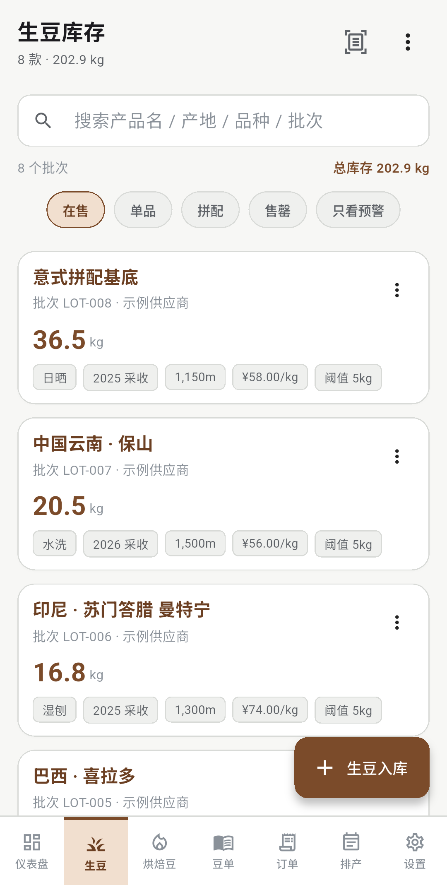
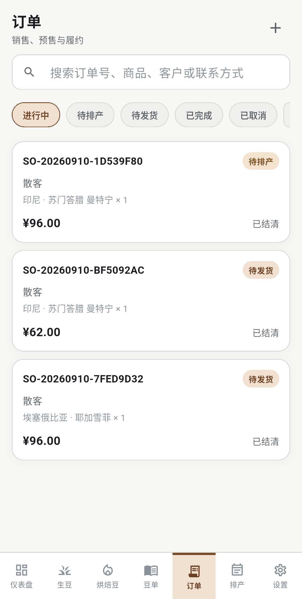

100% 本地优先
业务数据全部落本地 SQLite，社群版本不声明 INTERNET 权限；备份走应用文档目录，换机导入即可恢复。
面向咖啡烘焙从业者的本地生豆 / 烘焙豆库存管理 App。 业务数据只存本机，离线 OCR 自动识别生豆袋标签，袋·kg 双计量与临期预警， 烘焙转化、拼配成本与毛利定价一站完成。
Flutter 跨端构建 · Android 12+ / iOS 16+
六类核心能力，全部围绕"本地优先 + 业务闭环"设计，不依赖任何云服务即可独立运行。
业务数据全部落本地 SQLite，社群版本不声明 INTERNET 权限；备份走应用文档目录，换机导入即可恢复。
生豆按 kg 计量，烘焙豆按「袋 · kg」双计量并行。呆滞、过期、临期与低库存多档预警，盘点草稿可分段保存后原子提交。
生豆多行拼配投入，自动核算失重比与单位成本；按目标毛利率反推建议售价，给出 ±5% 参考区间。
现货销售立即发货，预售订单走"冻结→排产→履约分配"；客户充值/消费/退款流水可重放校验，扫码即销售。
内置 PaddleOCR 端侧推理，图片不上传任何服务器。识别字段以候选形式预填，逐字段核对，不静默覆盖。
全库存以流水为真相源；备份可选 AES-256-GCM 口令加密（PBKDF2 20 万次迭代），恢复门禁拒绝任何旁路写入。
以下截图为模拟器实际运行画面，展示 App 在日常烘焙场景中的关键页面。


从设计上就拒绝"云端"——业务数据全程在设备本地流转，可验证、可导出、可加密。
Android 社群渠道构建不声明 INTERNET 权限，从系统层面禁用数据上传。
AES-256-GCM（PBKDF2-HMAC-SHA256 · 20 万次迭代），忘记口令无法找回——这是设计而非缺陷。
没有第三方 SDK、没有统计上报、没有推送。错误日志仅本地保留最近 50 条，可手动导出。
全库存以不可变流水为真相源，导出/恢复时往返校验账实一致；恢复门禁拒绝一切旁路写入。
Flutter / Dart 一套代码同时构建 Android 与 iOS 原生应用；UI 遵循 Material 3，支持浅色 / 深色主题与系统跟随。